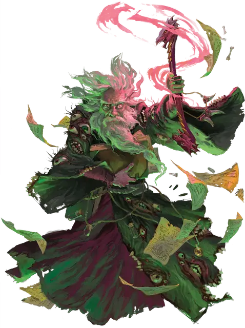

Халастер Чёрный плащ
Halaster Blackcloak
Средний Гуманоид (Человек), хаотично-злой, именной НИП

Класс Доспеха 14 (17 с доспехом мага)
Хиты 246 (29к8 + 116)
Скорость 30 футов
| мод | спас | ||
|---|---|---|---|
| СИЛ | 10 | +0 | +0 |
| ЛОВ | 18 | +4 | +4 |
| ТЕЛ | 18 | +4 | +4 |
| мод | спас | ||
|---|---|---|---|
| ИНТ | 24 | +7 | +14 |
| МДР | 18 | +4 | +11 |
| ХАР | 18 | +4 | +4 |
Навыки Восприятие +11, История +21, Магия +21
Сопротивление урону огонь, электричество
Чувства тёмное зрение 120 футов, пассивное Восприятие 21
Языки Общий, Бездны, Дварфийский, Драконий, Инфернальный, Небесный, Подземный, Эльфийский
Опасность 23 (50000 опыта)
Бонус мастерства +7
Особенности
Особое снаряжение. . Халастер носит мантию глаз [robe of eyes], позволяющую ему видеть во всех направлениях, совершать с преимуществом проверки Мудрости (Восприятие), полагающиеся на зрение и дающую темное зрение на расстоянии до 120 футов. Мантия позволяет видеть невидимых существ и предметы, а также его зрение простирается на 120 футов на Эфирный План.
Халастер владеет скипетром взрыва [blast Scepter]. Его можно использовать в качестве магической фокусировки. Тот, кто настроен на скипетр взрыва, получает сопротивление к урону огнём и электричеством, и может действием использовать его для наложения заклинания волна грома [thunderwave] как заклинание 4-го уровня (Сл спасброска 16) без использования ячейки для заклинания.
Кроме того у Халастера есть рогатое кольцо [horned Ring], позволяющее настроенному на него владельцу игнорировать ограничения в магии Подгорья (см. «Изменения Магии»).
Восстановление магии (1/день). После окончания короткого отдыха, Халастер восстанавливает все свои ячейки для заклинаний от 5-го уровня и ниже.
Легендарное сопротивление (3/день). . Если Халастер проваливает спасбросок, он может вместо этого сделать спасбросок успешным.
Обновление. . Если Халастер умирает в Подгорье, он возрождается через 1к10 дней, восстанавливая свои хиты и любые недостающие части тела. Его новое тело появляется в случайно выбранном безопасном месте Подгорья.
Использование заклинаний. . Халастер является заклинателем 20-го уровня. Его базовой характеристикой является Интеллект (Сл спасброска от заклинаний 22, +14 к атакам заклинаниями). Он может неограниченно накладывать заклинания маскировка [disguise self] и невидимость [invisibility]. Он может наложить по одному разу заклинания полёт [fly] и молния [lightning bolt] каждое, не расходуя при этом ячейку заклинания, но повторение возможно только после короткого или продолжительного отдыха. У него подготовлены следующие заклинания волшебника:
• Заговоры (неограниченно): пляшущие огоньки [dancing lights], огненный снаряд [fire bolt], свет [light], волшебная рука [mage hand], фокусы [prestidigitation]
• 1-й уровень (4 ячейки): доспехи мага [mage armor], волшебная стрела [magic missile], щит [shield], безмолвный образ [silent image]
• 2-й уровень (3 ячейки): волшебный замок [arcane lock], облако кинжалов [cloud of daggers], тёмное зрение [darkvision], открывание [knock]
• 3-й уровень (3 ячейки): контрзаклинание [counterspell], рассеивание магии [dispel magic], огненный шар [fireball]
• 4-й уровень (3 ячейки): смятение [confusion], мираж [hallucinatory terrain] превращение [polymorph]
• 5-й уровень (3 ячейки): длань Бигби[Bigbys hand], обет [geas], силовая стена [wall of force]
• 6-й уровень (2 ячейки): пляшущая молния [chain lightning], сфера неуязвимости [globe of invulnerability], заданная иллюзия [programmed illusion]
• 7-й уровень (2 ячейки): перст смерти [finger of death], знак [symbol], телепортация [teleport]
• 8-й уровень (1 ячейка): лабиринт [maze], сокрытие разума [mind blank]
• 9-й уровень (1 ячейка): метеоритный дождь [meteor swarm], исполнение желаний [wish]
Действия
Скипетр взрыва. . Халастер использует скипетр взрывов для накладывания заклинания волна грома [thunderwave] как заклинание 4-го уровня (Сл спасброска 16).
Легендарные действия
Халастер может совершить 3 легендарных действия, на выбор из представленных ниже вариантов. За один раз можно использовать только одно легендарное действие, и только в конце хода другого существа. Халастер восстанавливает использованные легендарные действия в начале своего хода.
Накладывание заклинания. . Халастер колдует заклинания 3-го уровня и ниже.
Под защитой заклинаний (стоит 2 действия). . Используя ячейку заклинаний 4-го уровня и ниже Халастер получает по 5 временных хитов за каждый уровень использованой ячейки.
Логово
Как Хозяин Подгорья, Халастер может несколько видоизменять своё подземелье. Действия логова и местные эффекты не простираются за пределы Подгорья.
Действия логова
При значении инициативы «20» (в случае ничьей проигрываем всем оппонентам) Халастер может совершить действие логова, чтобы вызвать один следующих эффектов:
• Халастер выбирает целью незанятое ничем или состоящее из сплошного камня пространство объёмом не более четырех 10-футовых кубов в пределах 30 футов от него и превращает открытое пространство в сплошной камень или наоборот.
• Халастер заставляет одну дверь или арку в пределах 30 футов от него исчезнуть и заменить её на глухую стену, или восстановить дверь или арку, ранее удаленную таким образом.
• Халастер деактивирует или повторно активирует одни из магических врат Подгорья. Врата должны находится в пределах 120 футов от него.
Местные эффекты
Когда Халастер находится в Подгорье, следующие эффекты могут возникнуть в любом месте подземелья или в любом расширяющем его дополнении:
• Появляется магическое око наблюдения в виде призрачного глаза гуманоида диаметром в 1 фут и окруженное пятнышками света. Око неподвижно, но Халастер может перенаправить его в любую сторону. Халастер может видеть через глаз, как будто он находится в занимаемым им пространстве. Око не может быть повреждено или развеяно, но оно начинает мерцать в антимагическом поле. Наблюдающее око действует до тех пор, пока Халастер не прервёт работу данного эффекта (не требует использования действий)
• Возникает незначительный иллюзорный эффект, как будто Халастер сколдовал в области заклинание малая иллюзия [minor illusion]. Чаще всего иллюзии представляют собой: эхо гремящих цепей, отдаленные звуки взрывов от заклинаний, парящий пыльный плащ или ржавый шлем, словно носимый невидимой фигурой, и призрачные следы, появляющиеся на пыльном полу.
• Безмолвные призраки потерявшихся мертвых искателей приключений парят по залам и комнатам. Призраки не могут быть повреждены, и они не взаимодействуют с существами или объектами. Их нельзя развеять, но можно подавить антимагическим полем.
Описание
Халастер, Безумный Маг Подгорья, невменяемая личность, стоящая за большинством ловушек и ужасов, находящихся в огромном подземелье под Глубоководьем. Подгорье его дом и галерея развлечений, в которой прочим отведена роль выступающих для его удовольствия актёров.
Безумный Маг знает как никто другой постоянно меняющиеся пути Подгорья, ибо именно он и контролирует эти изменения. Он предпочитает оставаться незримым наблюдателем, скрываясь в невидимости или присматривая за происходящим при помощи наблюдающего ока сенсоров выглядящих как широко открытые глаза, окруженные сверкающими пятнышками света.
Возможности Халастера намного превосходят силы большинства смертных магов. Опыт работы с магическими вратами позволяет ему путешествовать где угодно в своих магических исследованиях. Он проводит большую часть своего времени, создавая и настраивая врата, и накладывая на них старшие руны. Врата Халастера соединяют различные уровни Подгорья, что позволяет ему добавлять новых монстров в подземелье, заменяя ими тех, кто умер или сбежал. Даже когда группы авантюристов пытаются взять под свой контроль небольшую часть залов Подгорья, Халастер вмешивается в их планы постоянно изменяя опасности подземелья.
Истинный облик Халастера это высокий, изможденный мужчина, человек, но он использует магию для принятия множества других обличий и форм. Независимо от того в какой он форме, Безумный Маг подсмеиваясь, постоянно что-то бормочет. Однако, вопреки своей внешности, Халастер бдителен и внимателен к действиям и приготовлениям всех существ находящихся рядом с ним. Он никогда не ввяжется в бой, не наложив первым делом на себя заклинания доспехи мага [mage armor] и сокрытие разума[mind blank].